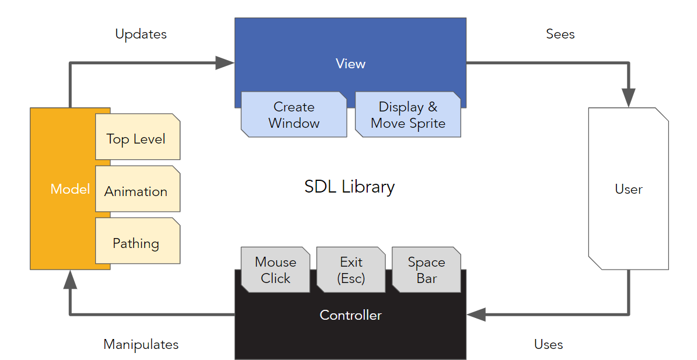

Desktop Pet
March 2023
Skills Used
Project Overview
An interactive desktop cat that randomly wanders around the screen. Created in C.
Goal
- Occasionally, the program prompts interaction with the user
Contributions
- Implemented natural-looking path finding algorithm, along with boundary box handling
- Integrated animation sequence into existing movement loop
- Create speed-changing feature upon user input
Project Deliverable
Code Architecture
We split our functionality into a Model, View, Controller architecture for cleanliness and easy navigation.
Pathing
The pet moved on one axis at a time. We represented the 4 directions with integers from [0-3], and implemented an option for the pet to idle in place (represented by the integer 4). Upon approaching a window bound, the pet reverses direction.
With every game loop, the pet's next direction would be generated semi-randomly. The direction would be weighted in favor of the previous direction, with a 52% chance of repeating the previous movement (and 12% for all other options). This allowed for more natural, non-circular paths that traversed the whole range of the screen.
Animations
While the sprite moved around, we wanted to have animations to match it walking in different directions. To accomplish this, we switched between various images during the game loop, following a pattern to make it appear that the cat was putting one foot in front of the other.
Because it was difficult and memory-inefficient to keep track of all the images per animation, we utilized a sprite sheet. This was essentially all these images placed onto one image next to each other.
In this sprite sheet, each row represents a direction of movement, while each column represents one frame. The sprite sheet is cropped into just 1 cat, which is what is displayed in the program. The changing the frame within the animation involves changing the position of the cropping within the sprite sheet.
User Interaction
In addition to the sprite randomly moving around, the user can also control some aspects. Clicking the cat changes its color, while pressing the space bar randomly changes the cat's speed.